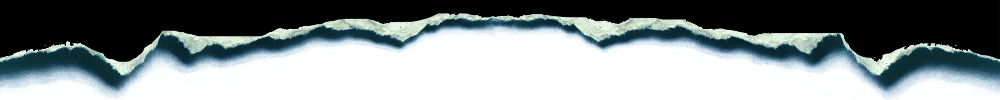

Amatőr programozó, de profi copy-paster (Ctrl+C, Ctrl+V).

Jó napot! Hali!
ㅤOlivér vagyok, ahogy az a domain címemből is kiderülhetett. ㅤA Napot már 18-adjára kerültem meg, a 19-diket most teljesítem, ezzel újabb személyes rekordot döntve. Szurkolj! ㅤPár éve már próbálom kockásítani a fejemet, noha eddig csak a projektjeim száma nőtt meg, a fránya gének miatt annyira még nincs informatikus fejem.
Blog
Blog oldalam, ahova próbálok gyakorta írni különböző cikkeket. Ne hagyd ki!